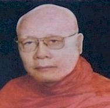

BuddhaSasana
Home Page
This document is written in Vietnamese, with Unicode
Times font
Tỳ kheo Thiện Minh
|
 Hòa thượng Pháp Tri, pháp danh là Dhammmannu Bhikkhu, thế danh là Nguyễn Thiện Tri, sanh năm Giáp Dần (1914) tại xã Phú An, huyện Tân Châu, tỉnh Châu Đốc (nay là tỉnh An Giang). Thân phụ là cụ ông Nguyễn Văn Xuyến, thân mẫu là cụ bà Trần Thị Hoa. Song thân Ngài đều thuần kính Tam bảo. Ngài sinh ra và lớn lên trong một gia đình có nếp sống nho phong, lễ giáo. Thuở còn ấu thơ, Ngài chăm chỉ học hành, tánh tình nhu mì, hiền hậu và thường hay cứu giúp mọi người. Đến tuổi trưởng thành, Ngài lại càng khác hẳn với mọi người ở thế gian, thích xem kinh sách giáo lý Phật đà, thường xuyên lui tới cảnh thiền môn và không màng danh lợi trần tục như những người trang lứa cùng thời. Thời gian trôi nhanh, Ngài như một người gieo hạt, cứ kiên trì chờ đợi hạt giống nảy mầm. Cho đến một ngày cơ duyên đã đến, Ngài quyết định từ bỏ gia đình thế tục bước lên con đường giải thoát. Ngài xin nhập môn tu hành theo truyền thống đạo Phật Nguyên thủy. Năm Bính Thân 1956, Ngài được thọ Tỳ kheo giới tại chùa Kỳ Viên, do Hòa thượng Hộ Tông làm Thầy tế độ. Nhận thấy Ngài có đủ năng lực truyền trì mạng mạch Như Lai, rường cột Phật giáo sau này, nên Hòa thượng ban cho Ngài pháp hiệu là Pháp Tri (Dhammannu Bhikkhu). Năm ấy Ngài 42 tuổi. Sau khi thọ giới, Ngài càng tinh tấn tu hành, thực hành đúng đắn theo giới luật Phật chế, chuyên tâm nghiên cứu kinh tạng Pàli, nỗ lực thiền định, nên được Phật tử quý mến, chư Tăng nể trọng lấy làm gương sách tấn. Song song với việc tu trì, Ngài bắt đầu sự nghiệp hoằng pháp lợi sanh. Hội đồng Chưởng quản Giáo hội Tăng Già Nguyên thủy Việt Nam tín nhiệm đề cử Ngài đảm nhiệm chức vụ Tổng thư ký kiêm Trưởng ban Kiến thiết của Giáo hội. Ngoài ra, Ngài còn tham gia tích cực các công tác từ thiện xã hội. Năm Quý Mão 1963, Ngài là Thành viên xuất sắc trong Ủy ban Liên phái Bảo vệ Phật giáo đấu tranh chống lại nạn kỳ thị, đàn áp Phật giáo của chính quyền Ngô Đình Diệm để bảo vệ sự bình đẳng tôn giáo. Năm Giáp Thìn 1964, chính quyền nhà Ngô sụp đổ, Giáo hội Phật giáo Việt Nam Thống nhất ra đời, Ngài được suy cử giữ chức Phó Viện trưởng Viện Hóa Đạo suốt 3 nhiệm kỳ. Thời gian này Ngài làm việc không ngơi nghỉ, vừa lo việc Phật sự của Giáo hội, vừa tham gia ủy lạo, ủng hộ từ thiện xã hội cho đồng bào bị thiên tai lũ lụt. Năm Kỷ Dậu 1969, Hòa thượng Thiện Luật, Phó Tăng thống Giáo hội Phật giáo Việt Nam Thống nhất viên tịch, Ban chưởng quản Giáo hội Tăng Già Nguyên thủy Việt Nam, cung thỉnh Ngài về trụ trì chùa Pháp Quang, quận Bình Thạnh để tiếp tục hoằng pháp lợi sanh. Năm Nhâm Tý 1972, Giáo hội nhận thấy Ngài có năng lực đối ngoại, kiến thiết chùa cảnh, nên đã thỉnh Ngài nhận lãnh trọng trách xây dựng Bảo tháp tôn thờ xá lợi Phật, và kiến tạo đài hỏa táng tại ấp Vĩnh Thuận, xã Long Bình, quận Thủ Đức, tỉnh Gia Định, lấy tên là Xá Lợi Phật Đài. Nơi đây, Ngài đã bỏ công sức tài trí rất nhiều, từ một mảnh đất hoang sơ cằn cỗi, cỏ dại um tùm trở nên một tu viện có thắng cảnh xanh tươi hùng vĩ. Mỗi khi đến địa phận Thủ Đức để đi Biên Hòa, mọi người đều ngang qua ngọn đồi Bác sĩ Tín, sẽ thấy một Xá Lợi Phật Đài nguy nga đồ sộ với một rừng cây thuốc Nam phong phú, giúp ích thiết thực cho đời và đạo. Năm Nhâm Tuất 1982, sau khi Giáo hội Phật giáo Việt Nam được thành lập, tuổi già sức yếu, Ngài bàn giao Phật sự, lui về trụ hẳn nơi Xá Lợi Phật Đà để tịnh tu, nhưng vẫn được Ban Đại diện Phật giáo huyện Thủ Đức cung thỉnh Ngài làm Cố vấn Chứng minh cho Ban đại diện. Từ tháng 4 năm Canh Ngọ 1990, Ngài nhuốm bệnh nặng, không còn đi lại được, tuy nằm trên giường bệnh, nhưng tâm trí Ngài vẫn sáng suốt nhất tâm chánh niệm. Mỗi khi nghe tiếng chuông chùa hôm sớm, Ngài đều chắp tay thầm niệm hồng danh đức Thế Tôn. Nhưng vô thường là định luật chung, không ai tránh khỏi, nên vào lúc 8 giờ 30 phút sáng ngày Rằm tháng 10 năm Bính Tý, nhằm ngày 25 tháng 11 năm 1996, giữa tiết trời đông cuối mùa Dâng Y Kathina, Ngài đã thu thần thị tịch, trụ thế 82 tuổi, hưởng 40 tuổi đạo. |